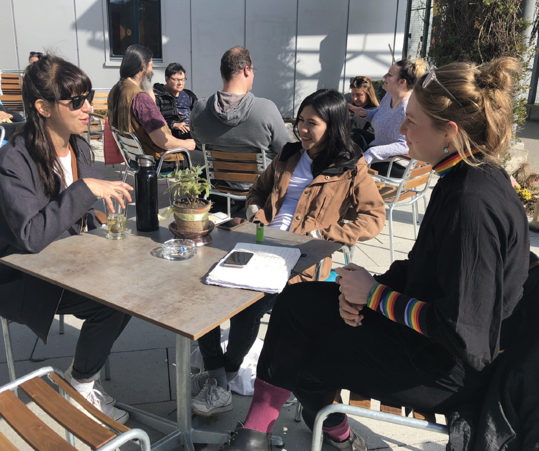
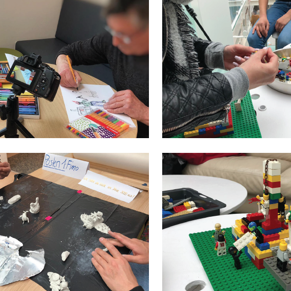
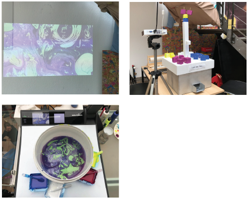
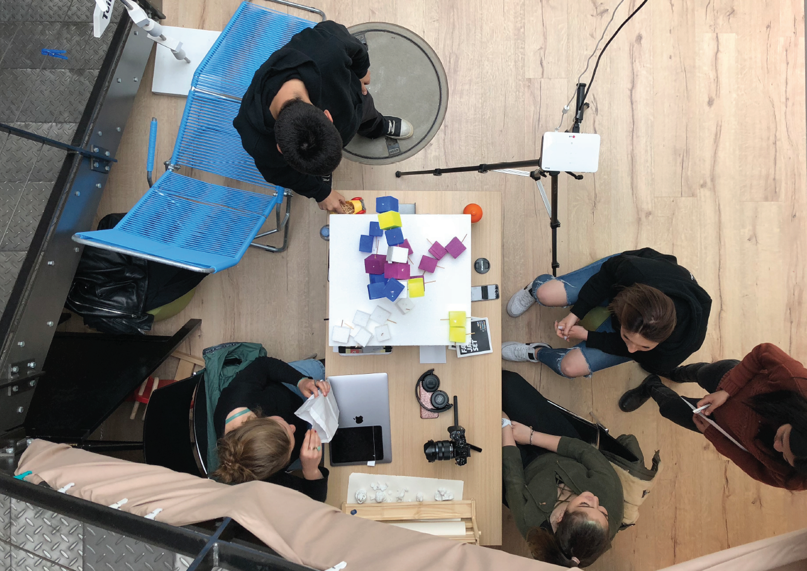
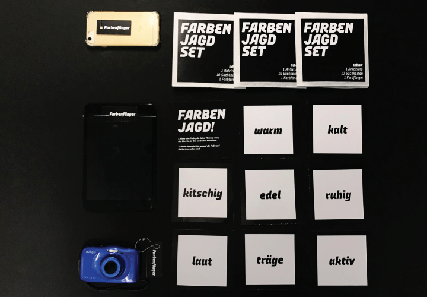

Farbaeder

| Abstract
Imagine it’s just a normal day at the Living Museum. Whether you go to the toilet, the upper workshops, the offices or the coffee shop, you can’t miss the farbaeder. At this point, where we are standing right now, everyone passes by. Visitors, artists and workers from the Ateliers – Living Museum become a part of the installation. The farbaeder speaks for itself and it is easy to understand how it works. Intuitively one reaches for a colored module and places it on the platform, thereby sending a brief expression. Meanwhile something exciting happens. This expression reaches the monitor in digital form and changes the previous image which is created by the previous participants. At this moment, the indirect and collaborative creation of art begins, in which each person gives something of themselves and become part of a whole. In this way, a work is created through indirect collaboration.
This open and flexible installation embodies collaboration and enables a different kind of communication. A nonverbal one.

| Participatory Journey
Over the past 6 weeks we as students from Interaction Design second semester had the opportunity to create a 6 week project with a real life partner during our «Design Process» module: The psychiatric clinic in Wil called the «Ateliers Living Museum». The goal of the course was to use different design methods - such as participatory design and design ethnography - to create an artefact that is created «with people, for the people, by the people». We found each other as a group of four people (Sonjoi Nielsen, Shafira Nugroho, Sophie Anderhub, Yangzom Sharlhey) after a rapid brainstorming where we all showed interest in the topic of communication between the people of the «Ateliers Living Museum».
* Sidenote: As we don’t like the expression of «patients» in the context of an atelier museum, we decided to call the participants of our project nothing less than artists, because that’s what they are.
1 | Meeting the artists
We had really personal conversations where both parties told about personal information and we started to build relations. We met many motivated people who and reveived many desires and ideas.

2 | Collaborative workshops
We made a participatory circuit with 3 stations: Fimo, LEGO and Drawing. Each station had a question that had to be answered with a material. After 15 minutes, the participants changed stations and continued to work on the existing works of art. The round ends after one whole tour.
We think that the LEGO version worked well because it’s modular, you can’t make any mistakes and it has a nostalgic meaning to the participants.

3 | Mock-Up
Our mock-up followed the 'Wizard of Oz' process and was built from a styrofoam base plate with cubes of different colors which can be plugged in. As the output, we used a visualizer where two of us were present and faked the output with real paint in water.

4 | On-Site User Testing
We tested the pock-up in the field and got some first reactions out of it. We still had to fake the colour output, as it was built out of styrofoam. People were very curious and participated in our pock-up. They also already started to interpret the output on the screen that we faked with water.We still thought that the affordance of the modules weren’t clear enough as the modules were made out of styrofoam and still very abstract. The live output fascinated each participant and some people even chose the modules because of colours.

5 | Cultural Probes
In our cultural probe we gave the artists a camera with which they had to take pictures of the colour of an object which describes it best. We called it «Farbfänger». We had 7 participants who took all of the 10 fotos. We actually discovered that there was no pattern of how people feel about colours and every person interpreted them individually.

| Production
During the production week we worked a lot on our code for the colour recognition and we also constructed and printed all of the modules via a 3D printer. We created a technical working prototype and evolved our modules over and over again. We all put a lot of effort into the production and worked hard.

| Final Prototype in Wil
As one of our final steps, we placed and tested our prototype on-site - the Art Living Museum in Wil. Our intentions were to evaluate how our targeted-users interact with the device as well as observe its impact in connecting people, encourage collaboration and start conversations. This was encouraged through playful user-testing and talk-aloud methods. The outcome was rich in emotional and sincere responses and many noted their interest in both the physicality of device and the technical aspects too! It interest us most to see how comfortable the users. Some were more busy with the input modules, some more with the output screen. It was really great to see how they reacted to different senses such as hearing, touching and seeing.


| Make & Share Art Live from Wherever!
In extension of our device, and our motive to encourage collaborative work through connecting-spaces, two other outcomes finalized our idea. This was achieved by creating a simple-physical- button and a live-website that is connected with the local device, which then with a clickof- a-button refreshes its live feed and publishes the most recent art works. The website www.farbaeder.com also has a gallery-page that collects and archives published works, which one can download and/or request personalized postcards to be made. The idea of postcards also encourages communication and supports the idea of togetherness despite distance.
Our screen was placed in the same space as the input device, therefore we wish for the future that the output screen would be put in other rooms or even in another country like the «Ateliers Living Museum» in New York.